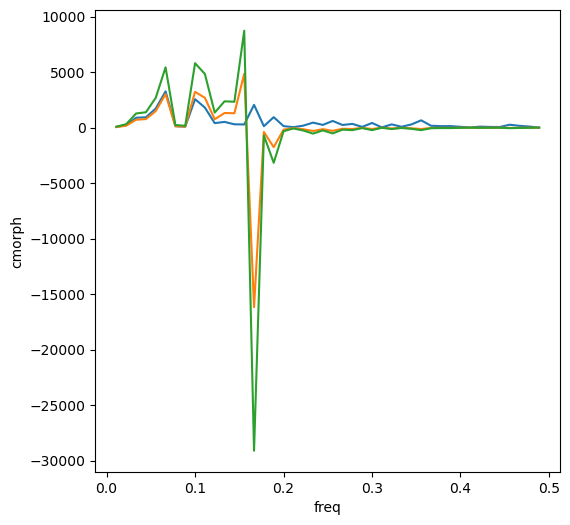

import xarray as xr
import numpy as np
from scipy.signal import detrend
from scipy.fft import fft
from scipy.stats import chi2
def power_spectral_analysis_xarray(data_array, dim, fs):
# 預處理：去除線性趨勢
data_detrended = xr.apply_ufunc(detrend, data_array, kwargs={'axis': -1})
# 使用FFT計算頻譜
n = len(data_array[dim])
freq = np.fft.fftfreq(n, d=1/fs)
psd = xr.apply_ufunc(fft, data_detrended, kwargs={'n': n, 'axis': -1})
psd = xr.DataArray(np.abs(psd)**2 / (fs*n), dims=['freq'], coords={'freq': freq})
return psd.sel({'freq': freq >= 0}) # 只返回正頻率部分
def calculate_markov_spectrum(data_array, dim, fs):
# 預處理：去除線性趨勢
data_detrended = xr.apply_ufunc(detrend, data_array, kwargs={'axis': -1})
# 使用FFT計算頻譜
n = len(data_array[dim])
freq = np.fft.fftfreq(n, d=1/fs)
psd = xr.apply_ufunc(fft, data_detrended, kwargs={'n': n, 'axis': -1})
psd = xr.DataArray(np.abs(psd)**2 / (fs*n), dims=['freq'], coords={'freq': freq})
# 只返回正頻率部分
psd = psd.sel({'freq': freq >= 0})
# 計算理論馬爾可夫譜
markov_spectrum = psd.copy()
markov_spectrum.values = markov_spectrum.values / (1 - (2 * np.pi * markov_spectrum['freq'])**2)
return markov_spectrum
def calculate_confidence_intervals(psd, alpha=0.05):
# 計算自由度
dof = len(psd) * 2 # 假設使用5點平滑器
# 計算置信區間
chi2_lower = chi2.ppf(alpha / 2, dof)
chi2_upper = chi2.ppf(1 - alpha / 2, dof)
lower_bound = psd * dof / chi2_upper
upper_bound = psd * dof / chi2_lower
return lower_bound, upper_bound
# 示例使用
# 假設fs是採樣頻率，data是氣象數據
fs = 1.0 # 每天採樣一次
pcp = (xr.open_dataarray('./data/cmorph_sample.nc')
.sel(time=slice('2017-12-01','2018-02-28'),lat=slice(9,14),lon=slice(122,127))
.mean(axis=(1,2)))
# 計算功率譜
power_spectrum = power_spectral_analysis_xarray(pcp, 'time', fs)
theo_spectrum = calculate_markov_spectrum(pcp, 'time', fs)
# 計算紅噪音置信區間
lower_bound, upper_bound = calculate_confidence_intervals(theo_spectrum)
power_spectrum
period = 1. / power_spectrum.freq
lower_bound
<xarray.DataArray 'cmorph' (freq: 45)>
array([ 4.92717844e-13, 4.84802104e+01, 1.75488780e+02, 7.08650526e+02,
7.69719570e+02, 1.49214806e+03, 3.01784666e+03, 1.29923612e+02,
9.31003138e+01, 3.22566459e+03, 2.68664462e+03, 7.52885869e+02,
1.31718693e+03, 1.29567673e+03, 4.85201216e+03, -1.61768180e+04,
-3.90882252e+02, -1.76030389e+03, -1.82288176e+02, -4.09610887e+01,
-1.41796636e+02, -2.99888391e+02, -1.38203414e+02, -2.90226540e+02,
-1.00874607e+02, -1.25179038e+02, -2.19544937e+01, -1.25367727e+02,
-6.31871405e+00, -7.18454711e+01, -1.77039978e+01, -5.88082024e+01,
-1.25927249e+02, -2.98206024e+01, -2.17920282e+01, -2.10834867e+01,
-1.01857928e+01, -2.07629380e+00, -1.14861179e+01, -7.55742091e+00,
-6.23942170e+00, -2.77910107e+01, -1.62288168e+01, -9.30168283e+00,
-8.45954872e-02])
Coordinates:
* freq (freq) float64 0.0 0.01111 0.02222 0.03333 ... 0.4667 0.4778 0.4889power_spectrum = power_spectrum.assign_coords(period=period)
lower_bound = lower_bound.assign_coords(period=period)
upper_bound = upper_bound.assign_coords(period=period)
from matplotlib import pyplot as plt
fig, ax = plt.subplots(1,1,figsize=(6,6))
ps_plt = power_spectrum[1:].plot.line(x='freq',ax=ax)
lb_plt = lower_bound[1:].plot.line(x='freq',ax=ax)
ub_plt = upper_bound[1:].plot.line(x='freq',ax=ax)
